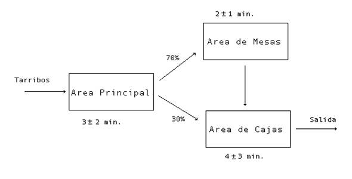
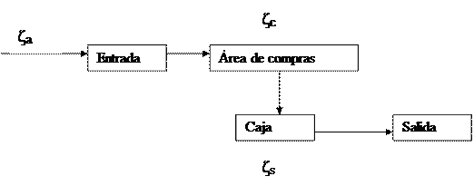
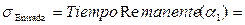
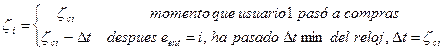
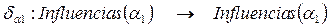
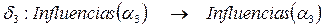
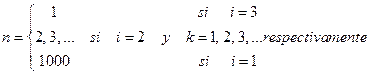

Podemos denominar la estrategia de S seguida hasta ahora como ESO a bloques de entrada - salida . En ella se trata de modelar cada componente de forma independiente para todos los objetos que entran o salen de ella y las variables descriptivas fundamentales consisten en el momento de llegada y el momento de salida de cada objeto en esa componente.
Esta estrategia tiene como ventaja esencial:
La alta reusabilidad. El modelo correspondiente a cada componente típica puede ser “reusado” en modelos de naturaleza muy diferente pero en los cuales exista la misma componente típica.
El modelo tiene como desventaja esencial:
La S supone el calculo de variables de estado de todo el conjunto de datos que fluyen por la componente. Ello requiere en primer lugar memoria para almacenar arreglos, pero sobretodo se diferencia el análisis de sistemas en los que hay reflujo de objetos entre diferentes componentes en momentos diferentes, incluyendo ciclos que son prácticamente insolubles en esta estrategia.
El ejemplo real del Banco de Esperanza ayuda a ilustrar tanto las ventajas como las desventajas de la ESOB de entrada - salida . En este caso se tiene el flujo de usuarios gobernado por el siguiente esquema:

De forma general el supermercado tendrá una Entrada a través de la cual se pasa a un Área de compras en la que están expuestos los productos a escoger. Una vez que se terminen de seleccionar los productos deseados se pasa a una Caja en la que se espera para ser atendido por un cajero y pagar. Una vez hecho esto se abandona el establecimiento por la salida.

El tiempo entre arribos de usuarios ζa es aleatorio con cierta distribución conocida, el tiempo con que cada usuario permanece en el área de compras ζc es también aleatorio con cierta distribución conocida. El tiempo que demora en pagar (aparte de la cola) es también aleatorio.
· Un evento es un “cambio de estado del sistema” que no consume tiempo. Así el sistema discreto de S por una sucesión de eventos que ocurren sucesivamente en ciertos instantes de tiempo asincrónicos y de manera tal que entre dos de tales instantes no hay cambios en el sistema.
· El estado del sistema se caracteriza por el conjunto de “variables de estado” de las “componentes principales”. Las variables de estado de una componente son el subconjunto de variables que caracterizan esencialmente la componente y a partir de la cual las restantes variables de esa componente (variables descriptivas) pueden ser calculadas.
En este enfoque de sistema discreto se consideran como componentes “principales” o “componentes activas” a las que no requieren de una acción externa para cambiar; cambian por si solas. (Ellas pueden estar influenciadas por otras, pero tienen su dinámica propia). Se consideran componentes “secundarias” o “pasivas” a aquellas que necesiten que otras componentes cambien de estado para cambiar ellas.
· El enfoque orientado a eventos permite así restringir la atención del simulador a aquellas componentes activas que pueden cambiar de estado en el próximo paso.
Ello exige de alguna forma establecer un calendario de eventos para lo cual hay que controlar en cada momento de un cierto “reloj” el tiempo en que cada componente activa realizará su próximo cambio.
En el ejemplo:
Componentes activas = { Entrada, Área, Caja}
Componentes pasivas = {Salida}
Variables descriptivas:
· Describiremos Entrada por el número o nombre del usuario k.
eent = k significa que llegó el k-ésimo usuario.
En el momento en que llega el k-ésimo usuario, el tiempo remanente o tiempo necesario para que llegue el próximo usuario es ζa. Después del incremento el tiempo Dt del Reloj, el tiempo remanente será ζa -Dt hasta que este valor sea 0 (llega el próximo usuario) .
· Describiremos el área de compras, por el conjunto de usuarios que están comprando, conjuntamente con sus tiempos remanentes de compras.
(x1, ζ1), (x2, ζ2), . . . (xn, ζn)
Estos tiempos remanentes ζI para cada usuario se calculan a partir de un tiempo ζc aleatoriamente asignado a cada uno y el instante t medido por el reloj.
Así en cada instante, el estado del área es:
eárea= { ζc, (x1, ζ1), (x2, ζ2), . . . (xn, ζn)} donde ζc es el tiempo de compras aleatorio que será asignado al próximo usuario que entre al área.
Si no hay entradas, el tiempo remanente del área es min (ζi), porque es el tiempo mínimo antes del cual un usuario sale del área, i varia entre 1 y n.
Podría pensarse que el tiempo remanente del área es min (ζa – DReloj, min ζi) pero es mejor considerar el evento “Entrada de un nuevo usuario” con tiempo remanente ζa – DReloj, como un cambio de estado de “Entrada que “influye” en un cambio de estado del área.
· Describiremos el Área de cajas (caja con su cola) por una lista de usuarios y0, y1, . . . ,yn, el primero de los cuales es el que está pagando. Cada usuario se demora un tiempo aleatorio ζs en pagar.
Por ello el estado de caja ecaja= { ζs, y0,y1, . . .,yn} donde ζs es el tiempo de pago que se asignará al próximo usuario que se ponga en la posición cero de la cola (que pase a caja).
De esta forma, el tiempo necesario para el cambio de estado (lo que le falta a y0 para terminar de pagar) en cada momento será s = ζc0 – D Reloj donde ζc0 es el tiempo de pago que fue “asignado” aleatoriamente a y0 en el momento que pasó a pagar.
Aquí pudiera pensarse que el tiempo necesario para el cambio de estado depende también del tiempo de compra porque este determina incorporaciones en la cola, pero una vez mas se enfoca el problema desde el punto de vista activo. Este cambio de estado de la cola producto de la incorporación de otros usuarios no es interno de la cola, sino influido por un cambio de estado interno del área de compras.
· La componente Salida se puede describir por la lista de usuarios que han salido {k1, k1, . . . ,kn}, pero esta componente es pasiva.
En Resumen: El estado del sistema se puede caracterizar por el conjunto de variables siguientes:
{ ζa, (x1, ζ1), (x2, ζ2), . . . (xn, ζn), ζc, { y0,y1, . . .,yn}, ζs, s}
¿ Cuáles son las reglas de interacción del sistema y cómo se precisan con este conjunto de variables?
Informalmente: Cuando llega un nuevo usuario lo que ocurre cada ζa minutos, pasa al área de compras donde se va a demorar un tiempo ζc asignado aleatoriamente.
Allí este tiempo va decreciendo con el avance del reloj y cuando para algunos de los usuarios xi llega a ser ζi =0, pasa a la cola de la caja, donde se incorpora de último. El usuario que encabeza esta cola (y0) es el que está pagando y en cada momento le falta un tiempo s para salir. Cuando sale el próximo de la cola pasa a pagar, lo que le demora un tiempo ζc.
Los eventos esenciales en este ejemplo son los que determinan cambios de estados de las componentes activas:
· Entrada del nuevo usuario (entra y pasa al área de compras).
· Compra usuario k (termina de comprar y se incorpora a la cola).
· Paga usuario (termina de pagar y sale).
Supongamos que el Reloj de S tiene el valor ti y el próximo instante de tiempo en que se registran algunos de estos eventos es ti + 1:
¿Cómo repercute ello en el estado del sistema?.
Sea e= { ζa, (x1, ζ1), (x2, ζ2), . . . (xn, ζn), ζc, { y0,y1, . . .,yn}, ζs, s}
e * = { ζa*, (x1, ζ1 -ζa), (x2, ζ2 -ζa), . . . (xn, ζn -ζa), (xn + 1, ζc), ζc*, { y0,y1, . . .,ym}, ζs, s-ζa}
Si Dt = ζk eso significa que el evento fue que terminó de comprar el usuario k, entonces
e * = { ζa- ζk, (x1, ζ1 –ζk), (x2, ζ2 –ζk), . . . (xk-1, ζk-1 –ζk), (xk+1, ζk+1 –ζk), …, (xn, ζn –ζk), (xn + 1, ζc), ζc, { y0,y1, . . .,ym, xk}, ζs, s-ζk}
Si Dt = s eso significa que el evento consistió en terminar de pagar y0, entonces
e * = { ζa- s, (x1, ζ1 –s), (x2, ζ2 –s), . . . (xn, ζn –s)}, ζc, { y1, . . .,ym }, ζs*, ζs}
¿Qué pasaría si Dt es simultáneamente dos o más de los valores posibles?.
Para lograr que los estados sean únicos debemos o bien:
· Definir eventos compuestos (complejiza el sistema).
· Definir prioridades, por ejemplo atender primero salida de caja, luego la terminación de una compra, por el orden de usuarios en el área y luego la entrada.
Véase que en cualquier momento de la S realizada por el movimiento del reloj entre [TiempoInicio, TiempoFin], se puede predecir cuál (o cuáles) son los eventos inminentes pues a partir del estado del sistema en el momento del reloj se puede predecir el tiempo en que ocurrirá cada tipo de evento.
· La próxima entrada en el tiempo = Reloj + ζa siendo ζa primera componente.
· La compra del usuario k en el tiempo = Reloj + ζk
· El pago de y0 en el tiempo = Reloj + s
Para facilitar la implementación del modelo se pone énfasis en los eventos que ocurren en cada componente activa y se automatizan los cambios derivados en las componentes que son influidas por este cambio, de otra parte se pone énfasis en el preordenamiento de los eventos a partir del conocimiento del tiempo en que ocurriran.
Esto lleva a la idea de Influencias de una componente activa, de Listado de eventos, eventos inminentes y función de selección de prioridades.
1. Componentes = Componentes Activas È Componentes Pasivas
Componentes Activas = {a1, a2, . . . ,aa}
Componentes Pasivas = {aa +1, aa + 2, . . . ,an}
2. " i = 1, 2, . . . , n definimos eai = Estado (ai) // COMPONENTES PASIVAS
3. " i = 1, 2, . . . , a definimos sai= TiempoRemanente (ai), esto es, el tiempo que falta en cada momento para que la componente ai cambie por si misma.
4. " i = 1, 2, . . . , a definimos:
Influencias (ai) = {(b1,eb1, sb1), (b2,eb2, sb2),...,(bk,ebk, sbk), ( bk+1,ebk+1),...,((bn, ebn))}
Como el conjunto de todas los componentes (activas y pasivas) que son influidas por un cambio interno de ai.
Nótese que junto con las componentes activas bi, 1£ i £ k, consideramos su estado ebi y su tiempo remanente sbi, mientras que con las componentes pasivas bk+1, …, bm consideramos sólo su estado.
Evidentemente " i = 1, 2, . . . , a (ai,eai , sai) Î Influencias (ai).
5. Reglas de interacción
" i = 1, 2, . . . , a se especifica una función de cambio de estado dai
Esta función describe el valor de dai (b,eb, sb) = (b,eb*, sb*) " b Î Influencias (ai) Ç Componentes Activas y dai (b,eb,) = (b*,sb*) " b Î Influencias (ai) Ç Componentes Pasivas.
6. " i = 1, 2, . . . , a se describen los eventos que pueden ocurrir que hacen que se active la componente ai, Evento k (ai) y el momento en que ellos pueden ocurrir Tk (ai).
A evento k (ai) va asociada una función dkai de cambio de estado y el evento interno en sí se describe por el valor particular de: dkai (ai,eai, sai) = (ai,eai*, sai*)
La función dkai sobre las otras componentes de Influencias (ai) describe el cambio general del sistema.
7. Los pares (Eventok (ai), Tk (ai)) se almacenan en una lista de eventos que se mantiene siempre ordenada respecto a las Tk (ai).
8. En cada momento del Reloj se denomina:
Inminentes (Reloj) = {Eventosk (ai) / Eventosk (ai), Tk (ai) Î Lista de eventos y Tk (ai) =Reloj }
9. Se define una función biunívoca:
Selecciona: Inminentes (Reloj) ® À* ={1,2, …, }
Eventos k (ai) ® n (prioridad)
10. El modelo se implementa con un algoritmo como el siguiente:
{Inicialización}
Begin
eai := eai0 {Valores iniciales}
if 1£ i £ a then sai:= sai0;
“Colocar los pares (Eventos k (ai), Tiempo de Inicio + sai) en la lista de eventos;
End
{avance del reloj}
Begin
Reloj := Ta siendo (Evento(a),Ta) el primer par en la Lista de Eventos.
Inminente := {Eventos (b) / (Eventos (b),Tb)} Î Lista de Eventos y Tb = Ta
While Inminente ¹ f do
Begin
Evento (b) = Seleccionar (mínimo (Inminentes))
Eliminar Evento (b) de Inminente;
Procedure Evento (b)
End
End.
Procedure Evento (b)
Begin
Ø Actualizar (b, eb*, sb*) = db (b, eb, sb);
Ø Para cada componente activa ζ tal que (ζ, eζ, sζ) Î Influencias (b)
actualizar (ζ, eζ*, sζ*) = db (ζ, eζ, sζ);
Ø Para cada componente pasiva m tal que (m, em,) Î Influencias (b) actualizar (m, em*) = db(m, em);
Ø Eliminar (Evento (b), T(b)) de Lista de Eventos;
Ø Para cada componente activa ζ tal que (ζ, eζ, sζ) Î Influencias (b)
Begin
v Determinar los eventos Evento (ζ) y el momento en que pueden ocurrir por Tk(ζ) = Reloj + sζ* {Puede ser mas de uno si sζ* depende de algún k};
v Insertar los pares (Evento k(ζ), Tk, (ζ)) en la Lista de Eventos si no están allí
End
Ø Ordenar lista de eventos
End (*Evento b*)
1) Componentes activas = {a1, a2,a3}, a = 3
a1 = Entrada, a2 = Área ,a3 = Caja
Componentes pasivas = {a4} N = 4
a4 = Salida
2) eEntrada = Estado (a1)= {k, ζ a}
eArea = Estado (a2)= { (x1,ζ 1), (x2,ζ 2), …,(xp,ζ p), ζ c}
eCaja= Estado (a3)= {k(y0, y1, …, yn), ζ s}
eSalida = Estado (a4)= {y0}
3) 

4) Influencias (a1) = {(a1,ea1 , sa1), (a2,ea2 , sa2) }
Influencias (a2) = {(a2,ea2, sa2), (a3,ea3 , sa3) }
Influencias (a3) = {(a3,ea3, sa3), (a4,ea4 }
5) Reglas de interacción

da1 (a1,ea1 , sa1) = (a1,e*a1 , s*a1)
ea1 = {k} e*a1 = {k + 1}
sa1 = Dt s*a = ζa
da1 (a2,ea2 , sa2) = (a2,e*a2 , s*a2)
ea2= { (x1, ζ1), (x2, ζ2), . . . (xp, ζp), ζc }
sa2 = ζ
e*a2 = { (x1, ζ1 –Dt), (x2, ζ2 –Dt), . . . (xp, ζp –Dt), (k+1,ζc), ζc *) }
s*a2 = min(ζ –Dt, ζc) = min(min(ζi –Dt)), ζc); i= 1,…, p
da2 (a2,ea2 , sa2) = (a2,e*a2 , s*a2)
ea2= { (x1, ζ1), (x2, ζ2), . . . (xp, ζp), ζc }
sa2 = min(ζ1, ζ2, ζp) = Dt y k = min {j / ζp = Dt; j=1,…,p}
e*a2 = { (x1, ζ1 –Dt), (x2, ζ2 –Dt), . . . (xk-1, ζk-1 –Dt), (xk+1, ζk+1 –Dt), …,(xs, ζs –Dt), ζc }
s*a2 = min(ζi –Dt / i = 1,…, s; i ¹ k)
ea3= { (y0, y1, …, yn), ζs}
sa3 = s
Entonces:
e*a3= { (y0, y1, …, yn), ζs}
s*a3 = s - Dt

da3 (a3,ea3 , sa3) = (a3,e*a3 , s*a3)
ea3= { (y0, y1, …, yn), ζc}
sa3 = s = Dt
Entonces:
e*a3= { (y0, y1, …, yn), ζc* }
s*a3 = ζc, Además e *a4 = {y0}
6) Evento (1, a1): Entra un usuario T1 (a1) = Reloj + sa1
Evento (k, a2): Compra usuario k, 1£ k £ p, Tk (a1) = Reloj + ζk
Evento (1, a3): Paga el usuario y0, T1 (a2) = Reloj + s
Evento (1, a1) d1a1 (a1,ea1 , sa1) = d a1 (a1,ea1 , sa1)
d1a1 (a2,ea2 , sa2) = d a1 (a2,ea2 , sa2)
d1a1 = d a1
Evento (k, a2) dka2 (a2,ea2 , sa2) = d a2 (a2,ea2 , sa2) Cuando usuario k sale del área.
dka2 (a3,ea3 , sa3) = d a2 (a3,ea3 , sa3) Cuando se incrementa cola.
Evento (1, a3) d1a3 = d a3
7) Lista de Eventos = Sort [{Evento (k, ai), Tk (ai) i = 1, 2, 3; k = 1, …, kaI}, Tk (ai)]
8) Inminentes (Reloj) = {Evento (k, ai) / Evento (k, ai), Tk (ai) e Lista de Eventos, Tk (ai) = Reloj}
9) Selecciona: Inminentes (Reloj) À * = {1, 2, 3, …}
Evento (k, ai) 